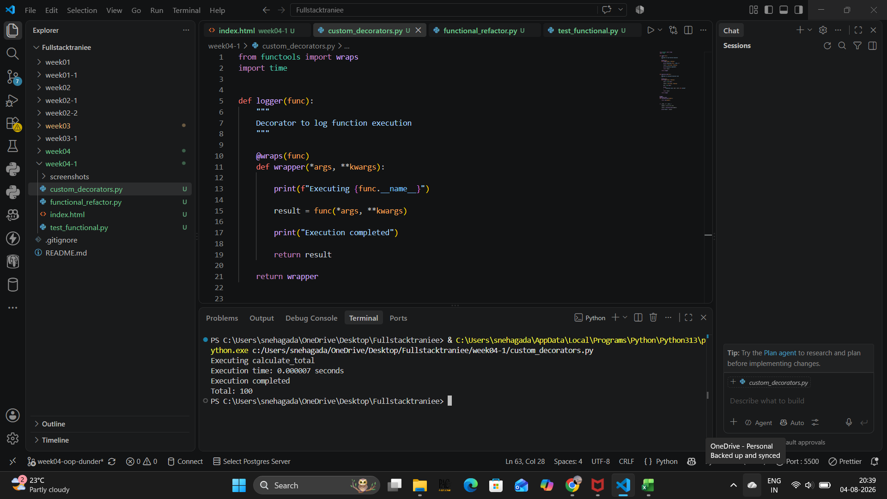
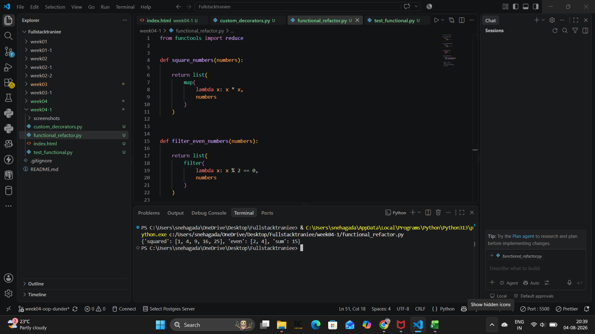
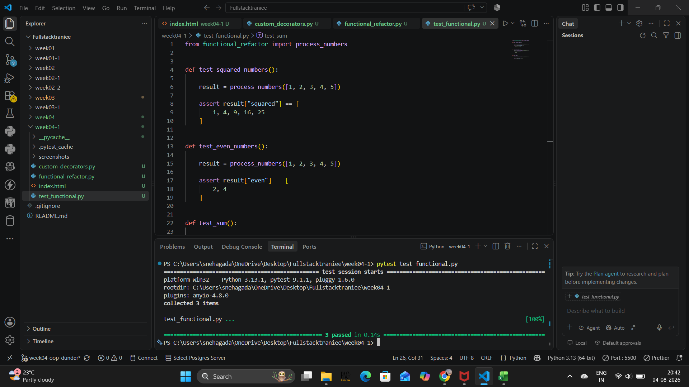

Implemented custom decorators for logging and execution time measurement.

Refactored code using functional programming concepts like map, filter, lambda and reduce.

Verified functionality using pytest.
